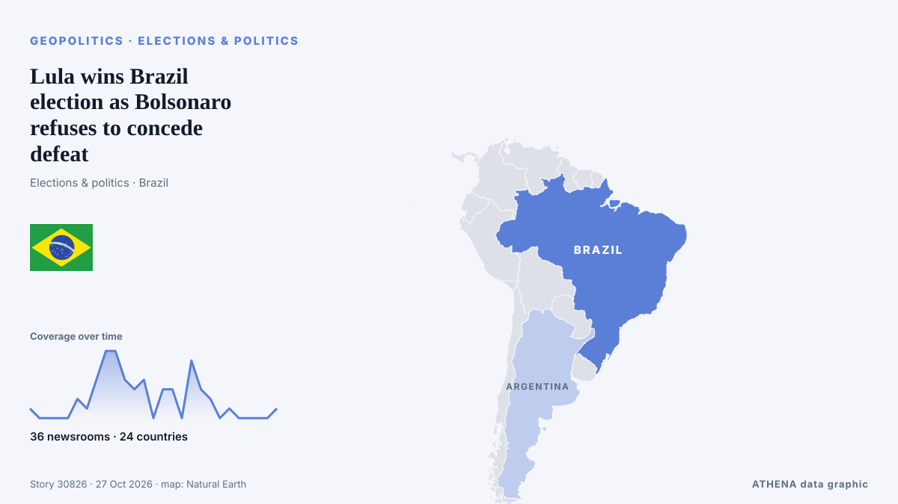

Lula wins Brazil election as Bolsonaro refuses to concede defeat

Rio de Janeiro: Brazil's President Luiz Inácio Lula da Silva, a vocal critic of US President Donald Trump, was reelected Sunday in a result that provides relief to critics of widening US influence in… de Gulf News
Relayé de façon indépendante par 36 médias dans 24 pays depuis le 25 oct. ; premier à l'annoncer : The Irish News (Belfast) ; la couverture s'est calmée. ATHENA juge le risque faible (1.0/10), surtout en raison de sa portée géographique et sectorielle et de la gravité des dommages décrits. La confiance est de 91 % (élevée) : 36 médias indépendants le confirment, avec une fiabilité moyenne des sources de 76 %.
Pourquoi c'est important: Les évolutions de sécurité et de diplomatie peuvent déplacer alliances, échanges et marchés bien au-delà des pays directement concernés.
Ce qui a changé : 19 nouveaux articles de 15 rédactions dans les 24 heures jusqu'au 27 oct..
Les titres sont affichés en anglais, tels que publiés.
En un coup d'œil
Sélectionné, noté et rédigé par la méthodologie publiée d'ATHENA. Aucun rédacteur n'intervient sur un événement en particulier. Comment il est produit ›
| 25 Oct 13:26 UTC | 1 |
|---|---|
| 25 Oct 15:26 UTC | 0 |
| 25 Oct 17:26 UTC | 0 |
| 25 Oct 19:26 UTC | 0 |
| 25 Oct 21:26 UTC | 0 |
| 25 Oct 23:26 UTC | 2 |
| 26 Oct 01:26 UTC | 1 |
| 26 Oct 03:26 UTC | 4 |
| 26 Oct 05:26 UTC | 7 |
| 26 Oct 07:26 UTC | 7 |
| 26 Oct 09:26 UTC | 4 |
| 26 Oct 11:26 UTC | 3 |
| 26 Oct 13:26 UTC | 4 |
| 26 Oct 15:26 UTC | 0 |
| 26 Oct 17:26 UTC | 3 |
| 26 Oct 19:26 UTC | 3 |
| 26 Oct 21:26 UTC | 0 |
| 26 Oct 23:26 UTC | 6 |
| 27 Oct 01:26 UTC | 3 |
| 27 Oct 03:26 UTC | 2 |
| 27 Oct 05:26 UTC | 0 |
| 27 Oct 07:26 UTC | 1 |
| 27 Oct 09:26 UTC | 0 |
| 27 Oct 11:26 UTC | 0 |
| 27 Oct 13:26 UTC | 0 |
| 27 Oct 15:26 UTC | 0 |
| 27 Oct 17:26 UTC | 1 |
| 26 Oct 03:20 UTC | 0.0 |
|---|---|
| 26 Oct 14:23 UTC | 1.5 |
| 27 Oct 17:53 UTC | 1.0 |
Pourquoi ces chiffres
Importance
Risque
Confiance
La couverture : qui l'a annoncé, et quand
titre tel que publié · ouvre l'original- The Irish News (Belfast) · Royaume-Uni · United KingdomClose contest expected as Lula takes on Bolsonaro’s son in Brazilian election
- CBC News · CanadaLula re-elected in Brazil as Bolsonaro rejects results
- Belfast Telegraph · Royaume-Uni · United KingdomLula is declared winner of Brazil’s election as Bolsonaro rejects results
- TASS (English) · Russie · RussiaPresidential candidate Bolsonaro urges to annul Brazilian elections’ results
- Express Tribune · PakistanBrazil’s Lula wins historic fourth term, Flavio Bolsonaro refuses to concede
- Fortune · États-Unis · United StatesTrump critic Lula wins reelection, saying Brazil is not ‘anyone’s backyard,’ while Bolsonaro asks for results to be annulled
- MercoPress · UruguayBolsonaro refuses to recognise Lula’s victory and says he will seek to annul the election
- Al Jazeera English · QatarBolsonaro calls for Brazil election result to be annulled
- Gulf News · Émirats arabes unis · United Arab EmiratesLula wins Brazil election as Bolsonaro refuses to concede defeat
- Baltic News Network · Lettonie · LatviaTight presidential race ends in Brazil – Lula wins as Bolsonaro plans legal challenge
- Channels TV · NigeriaBrazil’s Lula Clinches Poll Victory, Bolsonaro Seeks To Annul Election
- IOL · Afrique du Sud · South Africa‘A victory for democracy’: Lula supporters celebrate Brazil election win
- ABC News Australia · Australie · AustraliaLula celebrates unlikely victory in Brazil as Bolsonaro rejects results
- TheJournal.ie · Irlande · IrelandBrazil election: Left-wing President Lula scores surprise victory over Flávio Bolsonaro
- The New Arab · INTBrazil's Lula wins, Flavio Bolsonaro refuses to concede
- Vanguard · NigeriaBrazil’s Lula clinches poll victory, Bolsonaro seeks to annul election
- The Korea Times · Corée du Sud · South KoreaBrazil's Lula wins historic fourth term, Flavio Bolsonaro refuses to concede
- The Irish News (Belfast) · Royaume-Uni · United KingdomLula is declared winner of Brazil’s election as Bolsonaro rejects results
- Africanews (English) · AFRBrazil's Lula clinches re-election, Bolsonaro calls to annul vote
- Punch · NigeriaBrazil’s Lula clinches poll victory, Bolsonaro seeks to annul election
- The Independent · Royaume-Uni · United KingdomTrump ally Bolsonaro refuses to concede defeat as Lula triumphs in neck-and-neck Brazilian election
- Al Jazeera English · QatarFlavio Bolsonaro ‘will not give up’ after Brazil election results
- Haaretz (English) · Israël · Israel'Fraud': Netanyahu minister disputes Brazil election as Israeli leaders denounce Lula
- SABC News · Afrique du Sud · South AfricaSAFTU welcomes Lula da Silva’s election victory in Brazil
- Helsinki Times · Finlande · FinlandLula wins Brazil presidential election as Bolsonaro refuses to accept defeat
- The New York Times (World) · États-Unis · United StatesWhat to Know About Brazil’s Election, and What Comes Next
- The Independent · Royaume-Uni · United KingdomLula deals Trump a blow with Brazil election victory that ends Latin America’s right-wing streak
- France 24 English · FranceLula beats Bolsonaro in Brazil runoff: What does it mean for Donald Trump?
- PBS NewsHour · États-Unis · United StatesIncumbent Lula is declared winner of Brazil's election as Bolsonaro rejects results
- MercoPress · UruguayA judge appointed by Jair Bolsonaro rejects his son’s case for annulling the election
- The Guardian · Royaume-Uni · United KingdomFirst Thing: Brazil re-elects Lula in comeback rebuke for Bolsonaro and far right
- ABC News (International) · États-Unis · United StatesLula secures victory in Brazil, but faces challenge as Bolsonaro contests victory
- Agência Brasil (English) · Brésil · BrazilFlávio Bolsonaro rejects Lula’s victory, seeks to annul election
- The Irish News (Belfast) · Royaume-Uni · United KingdomLula secures Brazil election win but faces hurdle as Bolsonaro contests results
- Belfast Telegraph · Royaume-Uni · United KingdomLula secures Brazil election win but faces hurdle as Bolsonaro contests results
- The Korea Times · Corée du Sud · South KoreaLula mobilized millions to win Brazil's election, while Bolsonaro contests victory
- NDTV · Inde · IndiaBrazil's Flavio Bolsonaro Says Court Banned Him From Leaving Country
- The Straits Times · Singapour · SingaporeFlavio Bolsonaro says Brazil federal police asked for his passports
- Buenos Aires Times · Argentine · ArgentinaFlávio Bolsonaro says court banned him from leaving Brazil
- Free Malaysia Today · Malaisie · MalaysiaBrazil’s Flavio Bolsonaro says court banned him from leaving country